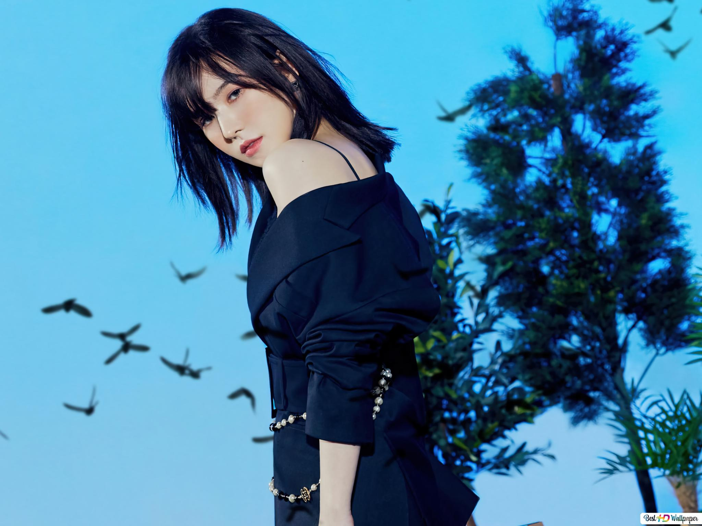

Son Seung-Wan who was born in 1994 in korea is in a girl group called Red Velvet who goes by the stage name Wendy. She is a korean singer and main vocalist of the group in which the group members are named Irene, Seulgi, Joy, and Yeri. She debuted in 2014 and is still going as an artist today. Wendy has a few solo ost's as well as collaborations all before she debuted as a solo artist in 2021. Her solo album is called Like Water which comprises of five songs. 